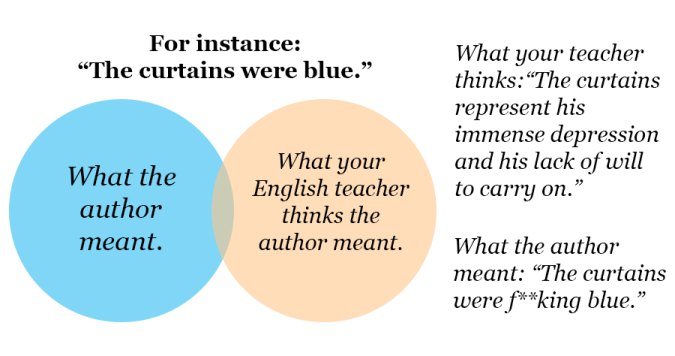

What Makes Content Good
Table of Contents
Guitars, Quizbowl, and Bad English Classes: On What Makes Content Good
Draft: v1.0 | Posted: 7/18/2020 | confidence of success: 25% | estimated time to completion: n/a | importance: Low
Intro
Those of you familiar with me through twitter probably know by now that I have managed to accrue a relatively large body of work; in the process of rageposting about several topics I’ve managed to put out longform content spanning storytelling, technical writeups, cognitive science, psychology, TAS videos, and a bunch of other similarly very unrelated topics (e.g. anime critical analysis).
If the very obvious Jon Bois inspiration for my video on Plup vs Prince Abu didn’t clue you in, I am not actually particularly good at any of these things. For any given topic I have made content for, there are many people much better than me at making that style of content. What I want to briefly touch on isn’t how to make any specific type of content, but rather what I think makes a (specifically longform) content piece good, and how we can make content that people like by studying pre-existing things people already think are good.
None of the insights contained in this rant are super mind-boggling, but I think some illustrative examples would help at least show the types of stuff I think about when I want to make something. I do not have it all figured out and I can only really speak for the type of content I enjoy making. But I hope that, regardless, this can prove at least somewhat helpful for some.
The Dynamic Ceiling
One of my favorite lectures I’ve ever watched is this video of John Mayer giving a lecture at Berklee College of Music. It’s about an hour and a half long, and I think virtually everybody who makes content would benefit from watching it.
In particular one idea from this lecture which has always stuck with me is this idea of “building up to the dynamic ceiling of your solo” which he touches upon about 40 minutes into the video. It’ll be hard for me to explain this idea through text as well as it’s explained through music, but the fundamental idea is that you don't want to jump right out of the gate shredding on your guitar as loud as possible. Instead good solos are built by "Spinning you around and around" and building up to that dynamic ceiling.
All things have a dynamic ceiling, and you never want people to see it.
This demonstration culminates in him doing a rendition of Waiting on the World to Change where you more or less see the very obvious linear dynamic increase as the song progresses. This stuff is sort of un-hearable once you start paying attention to it, and if you don't believe me here's Mayer's famous performance of Neon that every guitarist I have ever met has relentlessly tried to copy: just pay attention to how the dynamic ceiling gets built and how that alone does so much of the heavy lifting at drawing you in.
Something in particular about this performance is that within the macro-scale, crescendoing spiral you have a bunch of smaller, micro-scale spirals where he builds up to smaller climaxes which are the primary contributors to this macro-level spiral. It gives the whole performance a lot of texture, but the song always feels like it's going somewhere you can see in the distance. Mayer will arrive at the chorus at different parts of the spiral and even though it's the same motif it feels very different each time.
It's a little corny to say so, but music and storytelling are not so different.
Telling Compelling Stories: The Curtains Aren't Just Fucking Blue
I think that anybody with high-school-level english class experience could probably tell you that the parts of a story are the introduction, the rising action, the climax, the falling action, and the resolution. Maybe you learned these by slightly different names, but these are the pervasive, memorizable little elements that teachers force students to memorize when they take english classes.
Something that has always really frustrated me is the very large gap between "learning to understand storytelling" and "learning to score well on tests in english class". Everybody's lived experience is different, but I get the sense that a lot of people's early exposure to understand stories was taught by people without a real explicit love for stories. Most egregiously, I think that there's a pervasive focus on evaluating bricks as opposed to evaluating houses.
There's a meme about storytelling which always pisses me off whenever I see it.

Whenever I see people post stuff like this I just get profoundly sad, because I think the idea that the author would waste page space to draw attention to blue curtains for no reason is insulting to both the reader and the author. In particular I think a lot of STEM types hold this sort of view of art, where paintings are just cool looking pictures and novels are just sequences of cool things that happen. I truly believe that going through life having these beliefs is a tragedy, so if you think stuff like this I'm hoping I can at least moderately rectify the situation.
If we're interested in understanding what makes stories compelling, we need to briefly acknowledge the contract that the author makes with their audience. You can loosely imagine telling a good story to be like building a house out of bricks. The audience has no responsibility to think about any brick you place anymore than somebody listening to a piece of music has a responsibility to think about the specific chord progression used in the song.
But, very importantly, just because your audience isn't thinking about where you're placing bricks, it doesn't mean that it doesn't matter where you place them. Bricks stack on top of each other and form walls, rooms, and eventually the whole house. You have to think about which bricks to use and how they fit together in order to build a room the audience enjoys being in. A room with blue curtains can either contribute to a "sad" atmosphere or something else, like a "safe" atmosphere, depending on the other bricks used to build around it.
If you consume lots of storytelling, you'll eventually figure out that the idea of intro-rising-climax-falling-ending is more or less the same exact idea behind Mayer's whole "dynamic ceiling" bit. In both cases you have a specific point you are aiming at, and the entire artform is built around arriving at that specific point. Like with the dynamic ceiling, a good story can have a bunch of mini-stories embedded in the global structure which give it more texture and repeatedly pull the audience deeper and deeper into it. This talk by Kurt Vonnegut about "The Shape of Stories" illustrates the idea nicely: these stories are certainly more squiggly than your typically seen intro-rising-climax-falling-ending drawings, but they all gradually build to something larger than what they had when they started with.
Your ups and downs can, themselves, have recursive ups and downs, and depending on the different variables you have available you can manipulate your story in different ways. In music, you can do this with dynamics moving up and down (see: John Mayer) or key changes which repeatedly resolve temporary tensions (see: J.S. Bach). In storytelling, so you do it with events and atmosphere. These things can confirm expectations, or they can subvert them. There's a very wide, very expressive spectrum you can play with here to make things more compelling, and in certain formats you can have multiple threads moving at the same time. But critically, it all has to go somewhere. It all needs to point towards the ceiling you are working towards.
When you think about it this way, the idea that the curtains can "just be blue" sounds like a note can "just be an E flat". Maybe the author didn't intend to make the curtains an explicit representation of a specific thing, but it doesn't really have to be. As long as they're building a specific atmosphere, even subconsciously, it doesn't really matter what color the curtains are; all that matters is that the way they are described pulls you into the spiral of the story.
Why Are Funny Things Funny?
At the risk of being "that guy who explains why things are funny", I'd like to submit the idea that most jokes are funny because they pull you along this spiral and lead to a specific "dynamic ceiling", usually some sort of punchline or subversion of expectation. Sometimes this just happens naturally, and when that happens you get an organic, very funny situation.
fox mains in a nutshell pic.twitter.com/biBk721Zrw
— EMG | moky (@moky_dokie) July 17, 2020
And, again, at the risk of "that guy who randomly drags politics into things", I think this is why we can all agree, no matter where you lie on the political spectrum, that virtually all jokes about Donald Trump are remarkably unfunny. Even if you agree with the sentiment of a joke, the punchline of every joke involving him is usually just whatever bombastic thing he said that they are parodying. You can't build a joke about it because the subject matter of the joke has already hit the dynamic ceiling. You can't write a joke about him saying "this storm is the wettest we've ever seen in terms of water" because there is no clever quip you can attach to it which will ever reach a dynamics level above it.
It is doomed to be unfunny, from the very beginning.
Quizbowl and the Art of Subtle Reveals
I've spoken in the past about my very brief foray into quizbowl during college, which for the uninitiated is a "buzzer knowledge testing competition"1. I had a brief stint where I wrote a couple questions for a high school tournament, and one of the concepts that sticks with me today is the idea of pyramidality in question writing.
Quizbowl questions are notably written differently from things like jeopardy which is most easily shown with an example question:2
In the FACS system, this behavior is coded as “six plus four,” making it the simplest of six major classifications. When studying macaques, Signe Preuschoft (“ZEEG-nuh PROY-shoft”) hypothesized that this action originally indicated that the actor was submissive and harmless. The use of the orbicularis oculi muscle differentiates two forms of this “affect display.” In the 1860s, Guillaume Duchenne (“ghee-YOME doo-SHEN”) photographed people contracting the corners of their eyes while displaying its “true” or “eye” form. Exaggerating this act may indicate lying, while a “superficial” form indicates manipulation and psychopathy. For 10 points, name this expression in which one raises the corners of the mouth, often to express happiness.
ANSWER: smiling [or word forms like smile; accept synonyms like grinning]
Unlike jeopardy, you can interrupt the reader at any point during their question. To be well-written, a quizbowl question should begin with some very obscure information about the answer, and slowly open up to more and more accessible information as you allow the reader to continue reading, until you arrive at some "obvious" clue3.
The reason I want to mention quizbowl here is because thinking about question-writing taught me two things about writing, in general:
- Understanding what your audience already knows is very, very hard
- The feeling you get when you finally know what a good question is talking about is very powerful
I was never particularly good at writing quizbowl questions4, but my (very brief) stint in writing questions was such an exercise in the Illusion of Transparency that I've never really forgotten it. It's from this experience that I believe even informational, objective-ish teaching content needs to think very hard about the dynamic ceiling: you want your audience to understand your ultimate point, but they don't have all the knowledge you have about it, so you build scaffolding to facilitate understanding until you can make them understand your ultimate point.
If point 1 is your stick, then point 2 is your carrot. Part of the human experience is that every individual has a different set of things they know, so writing which puts everybody on the same page really doesn't have to be condescending. In a lot of ways, a good essay is a lot like a good quizbowl question. If you can get most of the way through it without having to learn anything new, you just come out of it feeling smart, or even better, that you totally could've come up with that idea yourself.
You don't have to rush into your main point. If you build up all the surrounding elements first, the audience will either learn lots of new things, or know exactly which dots to draw together.
Conclusion
The internet age of content is a double edged sword. It's easier than ever before to make something and have people see it, but with such a vast ocean of content in the world it's easy to cite the Wadsworth Constant and explain that you need to get right into your climax as fast as possible.
It is genuinely true that some of your potential audience will be scared off by not being given what they want right away. Some people surely clicked on your content in order to be delivered an information payload in as little time as possible. Some people just do not have the attention span to be willing to be drawn in.
I am still working to make my content better5. But personally, I'm not interested in being a content McDonald's6.
This very, very long rant, appropriately, points at a single, really simple idea: that good content points in a consistent direction, and actively pulls you towards it harder and harder. Sometimes the pulling is steady, sometimes it's violent, sometimes it comes and goes. The way it pulls you is what makes it interesting. But what separates something good from something mediocre is whether it pulls you in, or tugs you all over the place.7
Footnotes:
The term "Trivia" is often used for these sorts of things but quizbowlers hate it and specifically use that word to refer to knowledge which has no purpose (further reading)
Sometimes this isn't so obvious, since things can only be as obvious as the easiest possible clue on the topic. Example from the same packet: For 10 points, name this Marxist proponent of epic theater who collaborated with Kurt Weill (“vile”) on The Threepenny Opera. Answer: Bertolt Brecht
Mostly because I barely knew anything compared to my teammates, but here's an example of a question I wrote for BHSAT 2014
In 2009, this athlete appeared on Jeopardy and incorrectly answered a question about himself. This man appeared in a comedy film disguised as Roger Murdoch, though Joey sees through it and tells this man he's "the greatest" even though his dad thinks he only tries during the playoffs. This man’s number, 33, was retired by UCLA in 1990, and he developed the "Sky Hook" shot. This copilot in the film Airplane! changed his name from Lew Alcindor after graduating college. For 10 points, name this former basketball player for the Los Angeles Lakers who, at 38,387 points, holds the record for most career points scored in the NBA.
ANSWER: Kareem Abdul Jabbar [accept Lew Alcindor until mentioned] <EB>
I'm not under any illusions that I'm perfect on all of these points all the time, and the fact that I think about them so often is mostly to make sure I'm keeping my thoughts coherent when I go on these long rambles.
Not to say that this is all bad content! Simply that this content, when done well, is referential
Next time you watch something you like, try to pay attention to how it builds up to the big memorable moment you like the most about it. It's what really separates the best from everybody else, in my humble opinion.
Final stray thought: if you like this sort of thinking connecting random ideas together you might enjoy Godel, Escher, Bach: An Eternal Golden Braid. Although, if it's a bit too dense, I won't judge you for it.